Adapting Visual Generators to Robot Control
Robot policies must follow language instructions while adapting to changes in objects, scenes, viewpoints, and task requirements. World action models draw on pretrained visual generators to learn actions jointly with their visual consequences. Adapting these generators to robot control requires an interface for representing and predicting robot actions within the visual backbone. A central design question is how directly action generation can reuse the pretrained components used for visual generation.
We introduce Awomo-0.5, a world action modeling framework that adapts pretrained visual generators to robot control. Our primary model, Awomo-0.5I, represents robot actions as image-like patches and jointly generates a future image and an action chunk, reusing the image transformer’s input and output patch projections. Conditioned on language, the current observation, and robot state, the model jointly denoises a future image and an action chunk.
We also study Awomo-0.5V, a video-based variant that uses learned action encoding and decoding layers within a shared video-action transformer. Both models are pretrained on 36,800 hours of real-robot trajectories, simulated demonstrations, public and in-house egocentric video, and UMI recordings, and our training data is organized around atomic skill families rather than end-to-end tasks. A unified action representation and source-specific validity masks enable joint training across embodiments while retaining visual supervision from data without action labels.
sharing the representations and computation of pretrained visual generators.

Model Evaluation
We evaluate Awomo-0.5I and Awomo-0.5V on simulation benchmarks and the Piper robot platform, examining task execution, robustness to environmental changes, and composition of learned skills. Each model is adapted separately to each benchmark and compared with representative vision-language-action models (VLAs) and world action models (WAMs).
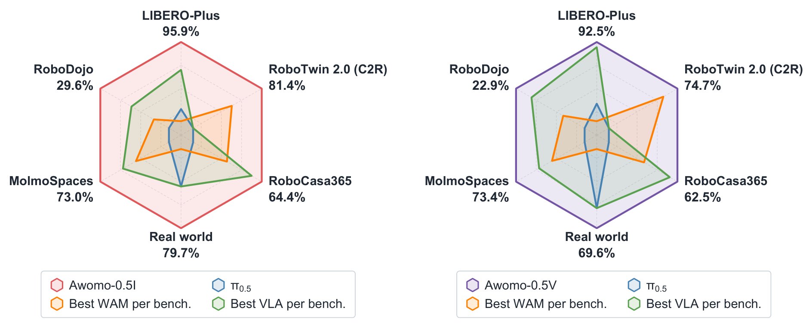
Simulation Evaluation
RoboDojo, RoboCasa365, LIBERO-Plus, MolmoSpaces, and RoboTwin 2.0 probe diverse task requirements, compositional kitchen tasks, robustness to controlled perturbations, object-interaction skills, and bimanual manipulation, respectively. We study post-training of Awomo-0.5I and Awomo-0.5V on these five simulation benchmarks, training a separate policy for each benchmark and evaluating it under the corresponding protocol.
RoboDojo
The RoboDojo simulation benchmark covers generalization, precision, long-horizon execution, memory, and open-vocabulary instruction following. Evaluation reports both task-progress score and complete-task success rate. For generalization, each metric is averaged across standard and randomized conditions. The overall score and success rate are then computed by averaging their respective values across the five capability dimensions.
Awomo-0.5I obtains an overall score of 35.3 and a success rate of 29.6%. Awomo-0.5V obtains 28.7 and 22.9%, respectively. For Awomo-0.5I, memory has the highest completion rate, at 41.2%; precision and long-horizon execution achieve success rates of 33.5% and 26.8%.
| Model | Generalization | Precision | Long-horizon | Memory | Open-vocabulary | Overall |
|---|---|---|---|---|---|---|
| Awomo-0.5I | 30.3 / 23.8 | 39.7 / 33.5 | 40.4 / 26.8 | 42.3 / 41.2 | 24.1 / 22.9 | 35.3 / 29.6 |
| Awomo-0.5V | 26.9 / 20.8 | 36.3 / 28.1 | 39.0 / 25.0 | 13.1 / 12.5 | 28.1 / 28.1 | 28.7 / 22.9 |

View the full comparison
| Model | Family | Generalization | Precision | Long-horizon | Memory | Open-vocabulary | Overall |
|---|---|---|---|---|---|---|---|
| GalaxeaVLA (G0) | VLA | 4.5 / 2.8 | 8.1 / 3.8 | 12.6 / 5.6 | 3.2 / 1.9 | 0.7 / 0.7 | 5.8 / 3.0 |
| StarVLA | VLA | 3.9 / 2.3 | 9.9 / 4.3 | 14.2 / 6.5 | 3.3 / 2.4 | 0.7 / 0.6 | 6.4 / 3.2 |
| Xiaomi-Robotics-0 | VLA | 7.4 / 5.6 | 8.4 / 4.6 | 13.5 / 6.9 | 5.1 / 3.7 | 0.2 / 0.2 | 6.9 / 4.2 |
| StarVLA-OFT | VLA | 7.4 / 4.8 | 16.1 / 10.2 | 14.3 / 6.2 | 1.7 / 1.7 | 1.4 / 1.3 | 8.2 / 4.8 |
| StarVLA-GR00T | VLA | 8.0 / 5.3 | 9.6 / 4.7 | 16.2 / 7.2 | 5.6 / 4.3 | 1.9 / 1.9 | 8.3 / 4.7 |
| MolmoAct2 | VLA | 8.5 / 4.7 | 10.9 / 4.5 | 15.2 / 7.0 | 5.5 / 4.6 | 4.8 / 4.4 | 9.0 / 5.0 |
| X-VLA | VLA | 10.5 / 6.8 | 18.3 / 12.0 | 16.5 / 9.8 | 4.8 / 3.6 | 0.6 / 0.5 | 10.1 / 6.5 |
| VLAct | VLA | 9.5 / 6.3 | 20.6 / 15.2 | 20.1 / 13.7 | 0.7 / 0.6 | 2.4 / 2.3 | 10.7 / 7.6 |
| StarVLA-PI_v3 | VLA | 11.2 / 8.1 | 17.8 / 12.5 | 18.5 / 11.0 | 4.6 / 4.0 | 2.0 / 2.0 | 10.8 / 7.5 |
| InternVLA-A1.5 | VLA | 10.4 / 6.8 | 15.2 / 10.2 | 23.8 / 13.8 | 4.9 / 3.6 | 1.4 / 1.4 | 11.2 / 7.1 |
| Pi-05 | VLA | 13.4 / 8.2 | 12.4 / 5.5 | 23.5 / 14.7 | 5.9 / 4.7 | 2.0 / 1.7 | 11.4 / 6.9 |
| Spatial Forcing | VLA | 14.1 / 9.3 | 17.3 / 10.6 | 23.3 / 14.6 | 5.4 / 4.1 | 1.8 / 1.6 | 12.4 / 8.0 |
| Hy-Embodied-0.5-VLA | VLA | 11.8 / 8.4 | 13.8 / 8.0 | 25.7 / 14.9 | 13.4 / 12.1 | 0.7 / 0.6 | 13.1 / 8.8 |
| Meituan-Robotics-0 | VLA | 13.8 / 8.2 | 16.8 / 7.8 | 29.6 / 18.6 | 10.1 / 8.9 | 4.5 / 4.3 | 15.0 / 9.5 |
| Xiaomi-Robotics-1 | VLA | 23.5 / 17.0 | 26.7 / 18.8 | 38.4 / 23.7 | 7.8 / 6.6 | 3.9 / 3.6 | 20.1 / 13.9 |
| GalaxeaVLA (G0.5) | VLA | 18.5 / 12.8 | 28.3 / 20.4 | 44.1 / 32.3 | 8.6 / 7.3 | 1.7 / 1.6 | 20.2 / 14.9 |
| DM0.5 (Dexmal) | VLA | 15.8 / 10.9 | 24.8 / 16.8 | 33.7 / 19.5 | 47.7 / 47.4 | 2.4 / 2.1 | 24.9 / 19.3 |
| LDA-1B | WAM | 0.8 / 0.1 | 3.3 / 0.7 | 2.0 / 0.1 | 2.1 / 1.8 | 0.1 / 0.1 | 1.7 / 0.5 |
| Fast-WAM | WAM | 2.3 / 1.1 | 2.0 / 0.0 | 9.1 / 5.2 | 3.5 / 3.4 | 0.4 / 0.4 | 3.5 / 2.0 |
| AHA-WAM | WAM | 5.8 / 3.3 | 5.9 / 2.4 | 8.6 / 2.7 | 3.0 / 2.8 | 0.9 / 0.8 | 4.8 / 2.4 |
| GigaWorld-Policy-0 | WAM | 5.3 / 2.9 | 6.2 / 1.8 | 15.5 / 8.9 | 3.5 / 2.2 | 0.5 / 0.5 | 6.2 / 3.3 |
| X-WAM | WAM | 7.4 / 3.3 | 6.7 / 1.8 | 17.5 / 9.1 | 6.3 / 4.7 | 0.6 / 0.3 | 7.7 / 3.8 |
| OpenWAM-α | WAM | 20.7 / 14.8 | 18.4 / 9.3 | 34.9 / 25.3 | 10.4 / 9.1 | 1.4 / 1.1 | 17.2 / 11.9 |
| Awomo-0.5V | WAM | 26.9 / 20.8 | 36.3 / 28.1 | 39.0 / 25.0 | 13.1 / 12.5 | 28.1 / 28.1 | 28.7 / 22.9 |
| Awomo-0.5I | WAM | 30.3 / 23.8 | 39.7 / 33.5 | 40.4 / 26.8 | 42.3 / 41.2 | 24.1 / 22.9 | 35.3 / 29.6 |
Standard and randomized generalization yield 37.70 / 30.89% and 22.92 / 16.78%, respectively, where each pair denotes score / success rate. The success-rate drop under randomized generalization identifies robustness as a remaining challenge. The gap between long-horizon score and complete-task success also indicates that partial task progress does not consistently lead to final completion.
RoboCasa365
RoboCasa365 provides 365 kitchen tasks across 2,500 environments. Its multi-task learning benchmark evaluates 50 target tasks comprising 18 Atomic-Seen, 16 Composite-Seen, and 16 Composite-Unseen tasks. The unseen composite split tests whether a policy can execute task compositions excluded from its downstream training data. Evaluation runs 30 trials for each of the 50 target tasks, yielding 1,500 episodes. Overall success is the total number of successful episodes divided by 1,500, equivalent to weighting the three split success rates in an 18:16:16 ratio.
Awomo-0.5I achieves 64.4% overall success (966/1,500), and Awomo-0.5V reaches 62.5% (938/1,500). Both models exceed Xiaomi-Robotics-1’s reported overall success rate of 57.4% by 7.0 and 5.1 percentage points, respectively. Awomo-0.5I performs better on unseen compositions, while Awomo-0.5V is stronger on seen compositions. Both retain substantial success on unseen task compositions, demonstrating generalization beyond the downstream training tasks.
| Model | Atomic-Seen | Composite-Seen | Composite-Unseen | Overall |
|---|---|---|---|---|
| Awomo-0.5I | 86.5 | 58.8 | 45.2 | 64.4 |
| Awomo-0.5V | 85.0 | 60.4 | 39.4 | 62.5 |

View the full comparison
| Model | Family | Atomic-Seen | Composite-Seen | Composite-Unseen | Overall |
|---|---|---|---|---|---|
| Azero-Robotics-1 | VLA | 30.3 | 3.8 | 1.6 | 12.6 |
| π0 | VLA | 34.6 | 6.1 | 1.1 | 14.8 |
| π0.5 | VLA | 39.6 | 7.1 | 1.2 | 16.9 |
| GR00T N1.6 | VLA | 51.1 | 9.4 | 1.7 | 21.9 |
| GR00T N1.5 | VLA | 50.7 | 14.8 | 2.7 | 23.9 |
| WorldDreamer | VLA | 66.3 | 26.7 | 9.0 | 35.3 |
| RLDX-1 | VLA | 67.6 | 27.9 | 8.5 | 36.0 |
| PRTS | VLA | 66.3 | 30.3 | 18.8 | 39.6 |
| Phasor-m7 | VLA | 78.7 | 57.4 | 31.5 | 56.8 |
| Xiaomi-Robotics-1 | VLA | 80.2 | 57.1 | 32.1 | 57.4 |
| GigaWorld-Policy 0.1 | WAM | 44.4 | 11.8 | 2.9 | 20.7 |
| ABot-M0.5 | WAM | 75.6 | 37.7 | 3.3 | 40.3 |
| Awomo-0.5V | WAM | 85.0 | 60.4 | 39.4 | 62.5 |
| Awomo-0.5I | WAM | 86.5 | 58.8 | 45.2 | 64.4 |
LIBERO-Plus
LIBERO-Plus evaluates manipulation policies under controlled changes to camera viewpoints, robot initial states, language instructions, lighting, background textures, sensor noise, and object layouts. Its 10,030 evaluation tasks test whether a policy remains reliable when the scene and instructions differ from its training conditions. Each evaluation covers all 10,030 task instances, with one rollout per instance. The reported category mean is the arithmetic mean of the seven category success rates, giving equal weight to each perturbation type.
Awomo-0.5I achieves a category mean of 95.9%, and Awomo-0.5V achieves 92.5%. Both models maintain success rates above 97% under background, sensor-noise, camera, and lighting perturbations. Language perturbations, object layouts, and robot initial states are the main remaining challenges for Awomo-0.5V. The two models exceed the 92.0% category mean reported for Qwen-RobotManip-Context, showing strong robustness across the evaluated perturbations.
| Model | Camera | Initial state | Language | Lighting | Background | Sensor noise | Object layout | Category mean |
|---|---|---|---|---|---|---|---|---|
| Awomo-0.5I | 98.6 | 89.9 | 94.3 | 99.5 | 98.8 | 99.1 | 91.0 | 95.9 |
| Awomo-0.5V | 98.7 | 84.0 | 87.9 | 97.4 | 98.5 | 97.8 | 83.3 | 92.5 |

View the full comparison
| Model | Family | Camera | Initial state | Language | Lighting | Background | Sensor noise | Object layout | Category mean |
|---|---|---|---|---|---|---|---|---|---|
| GAM | VLA | 83.1 | 70.0 | 84.8 | 97.2 | 94.3 | 95.3 | 79.1 | 86.3 |
| π0.5 | VLA | 75.8 | 79.4 | 83.3 | 95.5 | 95.0 | 89.6 | 87.0 | 86.5 |
| Multi-view VLA | VLA | 89.6 | 60.1 | 86.9 | 98.0 | 95.7 | 97.2 | 78.2 | 86.5 |
| 3DVLA | VLA | 75.6 | 77.4 | 88.6 | 97.4 | 97.7 | 85.3 | 86.6 | 86.9 |
| ERVLA | VLA | 77.2 | 75.3 | 87.1 | 95.1 | 94.7 | 92.3 | 86.4 | 86.9 |
| RLDX-1 | VLA | 75.0 | 91.8 | 92.2 | 97.1 | 95.5 | 80.3 | 80.7 | 87.5 |
| Reflective VLA | VLA | 95.7 | 72.9 | 92.2 | 92.1 | 92.7 | 95.4 | 73.0 | 87.7 |
| ACoT-VLA | VLA | 96.6 | 70.4 | 79.7 | 95.1 | 97.1 | 95.9 | 85.0 | 88.5 |
| Anchor-Align VLA | VLA | 96.3 | 59.1 | 87.2 | 99.0 | 99.6 | 96.9 | 97.4 | 90.8 |
| QuoVLA | VLA | 98.4 | 73.5 | 83.7 | 96.3 | 99.0 | 94.8 | 90.4 | 90.9 |
| CAC-VLA | VLA | 94.8 | 72.5 | 86.6 | 98.9 | 98.6 | 98.3 | 87.6 | 91.0 |
| Hermite-VLAReg | VLA | 89.2 | 85.4 | 87.3 | 97.7 | 96.7 | 93.8 | 89.9 | 91.4 |
| Qwen-RobotManip-Context | VLA | 89.9 | 83.9 | 86.5 | 98.6 | 99.9 | 97.9 | 87.5 | 92.0 |
| Fast-WAM | WAM | 16.4 | 44.5 | 68.9 | 78.2 | 53.7 | 37.7 | 60.7 | 51.4 |
| Cosmos-Policy | WAM | 75.8 | 63.3 | 81.7 | 96.5 | 88.9 | 92.7 | 82.2 | 83.0 |
| ImageWAM | WAM | 80.8 | 50.3 | 91.4 | 98.1 | 85.5 | 93.8 | 80.5 | 82.9 |
| ABot-M0.5 | WAM | 70.5 | 87.4 | 88.6 | 94.0 | 89.7 | 75.5 | 85.2 | 84.4 |
| Being-H0.7 | WAM | 82.0 | 59.0 | 82.8 | 97.8 | 90.0 | 93.5 | 88.5 | 84.8 |
| Awomo-0.5V | WAM | 98.7 | 84.0 | 87.9 | 97.4 | 98.5 | 97.8 | 83.3 | 92.5 |
| Awomo-0.5I | WAM | 98.6 | 89.9 | 94.3 | 99.5 | 98.8 | 99.1 | 91.0 | 95.9 |
The reported policies are selected from multiple SFT trials, so these results report selected-checkpoint performance rather than an average over training seeds. The 95.9% and 92.5% category means are distinct from a pooled success rate over all 10,030 rollouts, which weights categories by their episode counts.
MolmoSpaces
MolmoSpaces provides diverse simulated environments for robot navigation and manipulation. We evaluate four manipulation task families: Open, Close, Pick, and Pick-and-Place. These families cover articulated-object interaction and object transport. For each task family, success rate is the number of successful episodes divided by the number of evaluated episodes. The combined average is the arithmetic mean of the Open, Close, Pick, and Pick-and-Place success rates, weighting the four families equally.
Awomo-0.5V achieves a combined average of 73.4%, and Awomo-0.5I reaches 73.0% overall. Both models perform strongly on closing and picking, and exceed PrimeR0’s reported combined average of 60.3%. Their task profiles are complementary: Awomo-0.5V is 13.1 percentage points higher on opening, whereas Awomo-0.5I is 12.1 points higher on Pick-and-Place.
| Model | Pick | Pick & Place | Open | Close | Four-skill mean |
|---|---|---|---|---|---|
| Awomo-0.5I | 84.5 | 71.0 | 49.3 | 87.2 | 73.0 |
| Awomo-0.5V | 86.4 | 58.9 | 62.4 | 86.0 | 73.4 |

View the full comparison
| Model | Family | Pick | Pick & Place | Open | Close | Four-skill mean |
|---|---|---|---|---|---|---|
| π0-FAST DROID | VLA | 22.0 | 10.9 | 11.1 | 38.6 | 20.7 |
| LAP-VLA | VLA | 24.9 | 6.6 | 11.4 | 45.9 | 22.2 |
| π0 DROID | VLA | 16.2 | 12.5 | 11.0 | 53.1 | 23.2 |
| π0.5 DROID | VLA | 36.4 | 13.6 | 22.7 | 65.1 | 34.5 |
| MolmoAct2 DROID | VLA | 48.3 | 23.3 | 11.7 | 71.3 | 38.6 |
| PRTS-Droid | VLA | 53.8 | 27.7 | 12.0 | 76.3 | 42.4 |
| WALL-OSS-0.5 | VLA | 73.8 | 46.0 | 16.8 | 78.5 | 53.8 |
| PrimeR0 | VLA | 77.5 | 54.6 | 27.8 | 81.3 | 60.3 |
| Psi-R2 | WAM | 73.1 | 41.5 | 9.0 | 62.2 | 46.4 |
| Vana-Policy | WAM | 59.7 | 36.1 | 35.1 | 60.8 | 47.9 |
| Cosmos3-Nano-Policy | WAM | 65.5 | 35.2 | 32.0 | 79.1 | 53.0 |
| Awomo-0.5V | WAM | 86.4 | 58.9 | 62.4 | 86.0 | 73.4 |
| Awomo-0.5I | WAM | 84.5 | 71.0 | 49.3 | 87.2 | 73.0 |
The Awomo-0.5V evaluation contains 1,000 Open, 915 Close, 1,000 Pick, and 1,000 Pick-and-Place instances, each evaluated once, totaling 3,915 episodes. The combined average weights the four families equally rather than weighting by their episode counts.
RoboTwin 2.0
RoboTwin 2.0 evaluates bimanual manipulation across 50 tasks under clean and randomized scene conditions. Its domain randomization varies clutter, lighting, backgrounds, tabletop height, and language instructions, testing policy robustness to changes in the observation and task context. We report two post-training settings: full-data uses both clean and randomized demonstrations, whereas clean-to-random uses clean demonstrations only. Both settings evaluate in clean and randomized scenes.
Full-data training (Full)
Awomo-0.5I achieves 96.0% success in clean scenes and 96.2% in randomized scenes, averaging 96.1% across the two conditions. The difference between conditions is only 0.2 percentage points, indicating consistent aggregate performance under the evaluated randomization. It exceeds MotuBrain’s reported average of 95.9% by 0.2 percentage points.
| Model | Clean | Randomized | Mean |
|---|---|---|---|
| Awomo-0.5I | 96.0 | 96.2 | 96.1 |
| Awomo-0.5V | 92.8 | 91.6 | 92.2 |

View the full comparison
| Model | Family | Clean | Randomized | Mean |
|---|---|---|---|---|
| π0 | VLA | 65.9 | 58.4 | 62.2 |
| X-VLA | VLA | 72.8 | 72.8 | 72.8 |
| π0.5 | VLA | 82.7 | 76.8 | 79.8 |
| LingBot-VLA | VLA | 88.6 | 86.7 | 87.6 |
| ZR-0 | VLA | 88.7 | 88.0 | 88.3 |
| HoloBrain-0-QW | VLA | 91.9 | 92.3 | 92.1 |
| G0.5 | VLA | 93.7 | 92.8 | 93.3 |
| Qwen-RobotManip | VLA | 93.7 | 94.0 | 93.9 |
| X-WAM | WAM | 89.8 | 90.7 | 90.3 |
| LaWAM | WAM | 92.6 | 89.8 | 91.2 |
| LingBot-VA | WAM | 92.9 | 91.6 | 92.2 |
| Faster-WAM | WAM | 92.8 | 92.3 | 92.6 |
| SelfWAM | WAM | 92.2 | 93.1 | 92.6 |
| MECo-WAM | WAM | 93.3 | 92.0 | 92.6 |
| AIM | WAM | 94.0 | 92.1 | 93.1 |
| ImageWAM | WAM | 93.2 | 93.6 | 93.4 |
| LingBot-VA 2.0 | WAM | 93.8 | 93.4 | 93.6 |
| Next Forcing | WAM | 94.1 | 93.5 | 93.8 |
| ABot-M0.5 | WAM | 94.0 | 94.2 | 94.1 |
| MotuBrain | WAM | 95.8 | 96.1 | 95.9 |
| Awomo-0.5V | WAM | 92.8 | 91.6 | 92.2 |
| Awomo-0.5I | WAM | 96.0 | 96.2 | 96.1 |
Clean-to-Random training (C2R)
Under clean-to-random post-training, Awomo-0.5I reaches 86.8% in clean scenes and 76.0% in randomized scenes, with an average of 81.4%; Awomo-0.5V averages 74.7%. Randomized-scene success is 10.8 percentage points lower than clean-scene success for Awomo-0.5I in this setting. These results characterize robustness after training on clean demonstrations only.
| Model | Clean | Randomized | Mean |
|---|---|---|---|
| Awomo-0.5I | 86.8 | 76.0 | 81.4 |
| Awomo-0.5V | 84.6 | 64.8 | 74.7 |

View the full comparison
| Model | Family | Clean | Randomized | Mean |
|---|---|---|---|---|
| starVLA | VLA | 46.5 | 3.2 | 24.8 |
| GalaxeaVLA | VLA | 62.7 | 12.7 | 37.7 |
| Xiaomi Robotics-0 | VLA | 62.9 | 18.2 | 40.6 |
| EventVLA | VLA | 65.6 | 15.7 | 40.7 |
| X-VLA | VLA | 68.0 | 20.9 | 44.5 |
| π0.5 | VLA | 70.7 | 46.0 | 58.4 |
| AHA-WAM | WAM | 64.3 | 3.2 | 33.8 |
| FastWAM | WAM | 77.8 | 1.9 | 39.9 |
| Abot-M0 | WAM | 57.4 | 30.4 | 43.9 |
| X-WAM | WAM | 70.0 | 25.8 | 47.9 |
| Spatial Forcing | WAM | 77.2 | 26.7 | 52.0 |
| OLA-Geo | WAM | 83.0 | 33.6 | 58.3 |
| 4D-WAM | WAM | 81.5 | 41.8 | 61.7 |
| GigaBrain-0.7 | WAM | 66.8 | 67.9 | 67.4 |
| OLA-Sem | WAM | 75.1 | 67.6 | 71.3 |
| Awomo-0.5V | WAM | 84.6 | 64.8 | 74.7 |
| Awomo-0.5I | WAM | 86.8 | 76.0 | 81.4 |
Real-World Evaluation
We evaluate Awomo-0.5V and Awomo-0.5I on the Piper platform, comparing them with π0.5 and DreamZero. The experiments measure atomic manipulation under seen conditions, transfer to unseen conditions, and generalization to compositions of learned atomic skills.
Single-Goal Demonstrations and Compositional Evaluation
The training set contains 3,921 single-goal demonstrations spanning five task families: pick, place, relative place, drawer close, and drawer open. Piper post-training uses only atomic-task demonstrations; compositional instructions are held out for evaluation. The 69 evaluation entries comprise 44 seen atomic tasks, 19 unseen atomic conditions, and 6 compositional tasks.
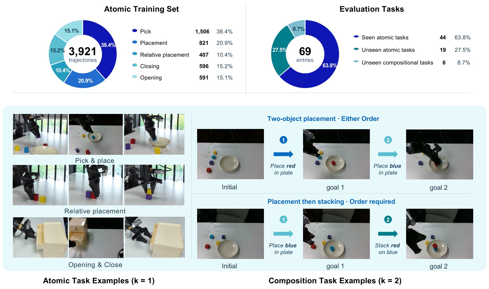
Performance under Seen and Unseen Conditions
After adaptation on the same Piper demonstrations, Awomo-0.5I achieves 79.7% (55/69) overall success and Awomo-0.5V reaches 69.6% (48/69), compared with 65.2% for π0.5 and 52.2% for DreamZero. Both models outperform the evaluated baselines overall and on compositional tasks.
| Model | Atomic-Seen | Atomic-Unseen | Compositional | Overall |
|---|---|---|---|---|
| π0.5 | 77.3 (34/44) | 57.9 (11/19) | 0.0 (0/6) | 65.2 (45/69) |
| DreamZero* | 63.6 (28/44) | 42.1 (8/19) | 0.0 (0/6) | 52.2 (36/69) |
| Awomo-0.5V | 81.8 (36/44) | 52.6 (10/19) | 33.3 (2/6) | 69.6 (48/69) |
| Awomo-0.5I | 88.6 (39/44) | 57.9 (11/19) | 83.3 (5/6) | 79.7 (55/69) |
Under seen conditions, Awomo-0.5I and Awomo-0.5V achieve 88.6% and 81.8% success. Gains over π0.5 come from relative-placement tasks, where the two models reach 75.0% and 60.0%, compared with 50.0% for π0.5. These tasks require identifying the target and reference objects and satisfying the spatial relation specified by the instruction.
Under unseen atomic conditions, Awomo-0.5I achieves 57.9%, matching π0.5. It succeeds on all unseen-color plate-placement, black-basket placement, and first-drawer closing entries. However, none of the evaluated models succeeds on the held-out left-of placement or third-drawer opening conditions. Learned operations transfer to some new objects and containers, while transfer to unseen spatial relations and action–drawer-level combinations remains limited.
From Single Goals to Compositional Instructions
The compositional entries combine trained atomic skills under a single instruction. Four require placing two named blocks into the white plate, with either placement order permitted. Two require placing one block into the plate and then stacking a second block on it. Ordered placement and stacking tests the integration of two different skills with a dependency between their goals. The first operation moves the support block into the plate; the second uses that block as the stacking reference and must follow the specified order.
Awomo-0.5I completes 5/6 compositional entries: all 4 two-object plate-placement tasks and 1 of 2 ordered place-and-stack tasks. Awomo-0.5V completes 2/6, while neither baseline completes a compositional task. Each compositional instruction is evaluated once. These results demonstrate reuse and composition of learned skills within a single instruction after training only on single-goal demonstrations.
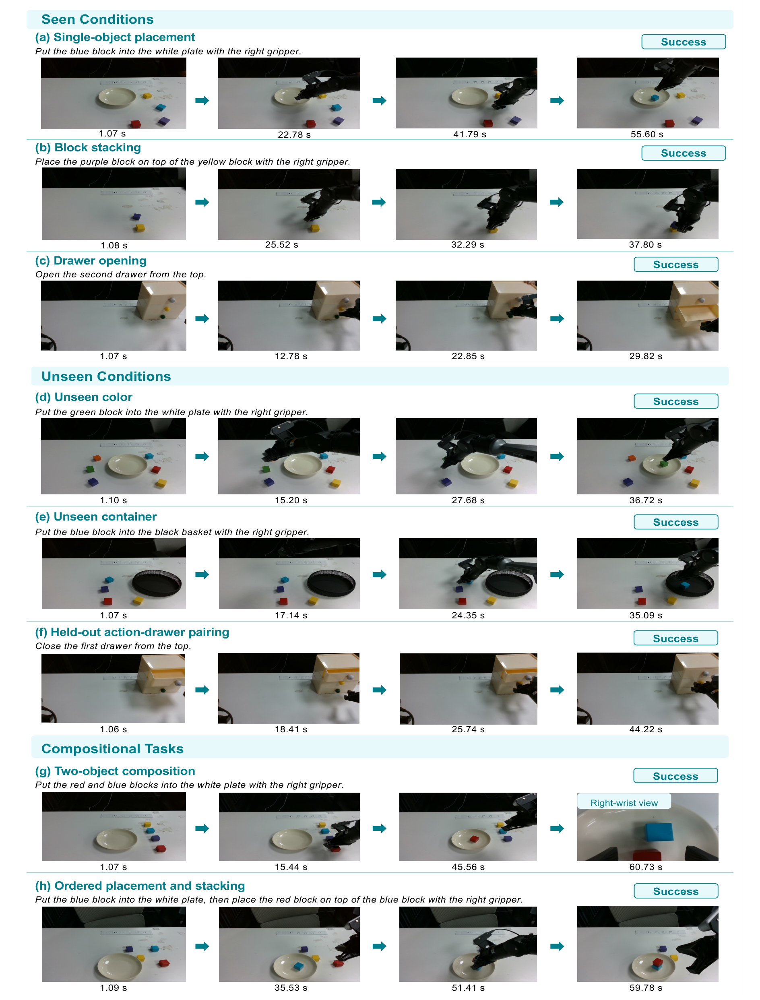
Experimental setup and baselines
The models receive RGB images from front, left-wrist, and right-wrist cameras, together with a 14-dimensional state comprising twelve joint positions and two gripper openings. All policies are adapted on the same 3,921 Piper demonstrations and evaluated with the same instructions, reference scenes, execution budgets, and success criteria. Atomic tasks have a 60-second limit and compositional tasks a 120-second limit. Success is judged manually against each task's goal.
* The evaluated DreamZero baseline starts Piper adaptation from the video-pretrained Wan2.2-TI2V-5B backbone, whereas both Awomo-0.5 variants start from our pretrained checkpoints. Thus, the DreamZero baseline uses the DreamZero architecture with a Wan2.2 initialization; it is not initialized from a robot-pretrained DreamZero policy checkpoint. π0.5 is initialized from the official checkpoint. These comparisons measure the performance of the complete adapted policies under a common downstream protocol; they do not isolate architecture from pretraining data and initialization.
Architecture and Training Objectives
Awomo-0.5 formulates robot control as conditional flow generation over visual and action variables. The conditioning context contains an embodied prompt, the current camera observations, and the current robot state. The generated variables are a future visual latent and an action chunk of horizon H, with 80 dimensions per step. Both are initialized from noise and iteratively denoised by one shared transformer; the state remains a condition and is not predicted.
Both variants read the same inputs: the text prompt, the camera observations, the robot state, and the visual and action targets, which are noised at a shared flow time t. Each variant turns these inputs into tokens with its own encoders, processes the tokens with its pretrained transformer backbone, and maps the outputs to the visual velocity and the action velocity. The variants differ in the visual prior, the text encoder, and how actions enter and leave the backbone.
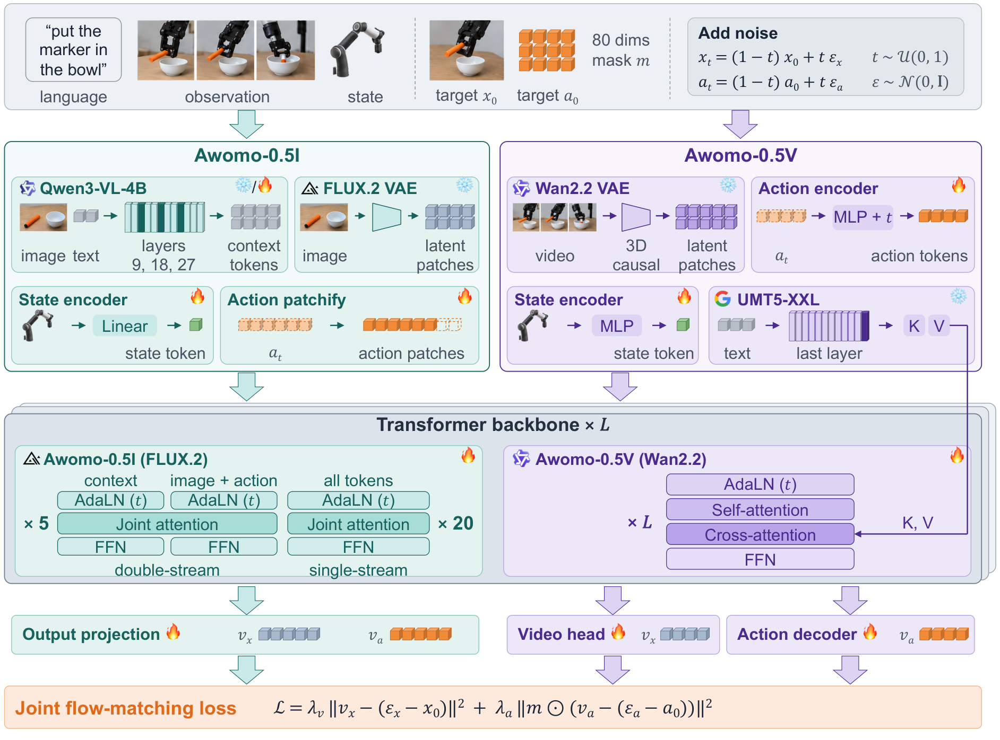
Awomo-0.5I: Image-Based Action Generation
Awomo-0.5I is initialized from the FLUX.2-klein-base-4B image transformer. The frozen FLUX.2 autoencoder encodes the current frame as a clean reference image and the frame aligned with the end of the action chunk as the noisy future-image target, and both latents are flattened into 128-channel patches. Each action step, an 80-dimensional vector, is zero-padded to the same width and treated as one additional patch. The patch sequence is therefore [reference image, noisy future image, noisy actions], and all patches share the transformer’s input projection and output projection.
A Qwen3-VL-4B-Instruct encoder reads the current observation followed by the text prompt; hidden states from layers 9, 18, and 27 are concatenated into 7,680-dimensional context tokens, and up to 128 text positions are kept. It is frozen in pretraining and unfrozen in fine-tuning only for benchmarks with subtask goals. A linear layer maps the current state to one context token that is inserted after the valid text tokens.
The backbone contains 5 double-stream blocks followed by 20 single-stream blocks with hidden size 3,072. In a double-stream block, the context tokens and the image and action patches keep separate timestep modulation and feed-forward weights and interact through joint attention; a single-stream block processes all tokens with one set of weights. The first 80 channels of the output at each action position give the action velocity, so the model needs no separate action expert and the pretrained image backbone processes actions directly. The future-image patches are decoded by the frozen autoencoder.
Awomo-0.5V: Video-Based Action Generation
Awomo-0.5V is initialized from the Wan2.2-TI2V-5B video transformer. The frozen Wan2.2 video autoencoder encodes the observation clip into video latents, which enter through the backbone’s 3D convolutional patch embedding. A learned action encoder maps noisy actions and their diffusion timestep into the transformer’s token space, and an independent MLP embeds the state. The text prompt is encoded by the frozen UMT5-XXL text encoder and is not part of the token sequence.
Each backbone block applies timestep modulation, self-attention over the video, state, and action tokens, cross-attention to the UMT5-XXL text features, and a feed-forward layer. A video head predicts the velocity of the video latents, and a dedicated MLP decoder maps the action tokens to the action velocity. The initial observation frame is kept clean as context and excluded from the visual loss; the model jointly denoises the following video frames and the aligned actions.
Awomo-0.5V groups time into chunks. Each chunk pairs one block of future video latents with H = 24 actions and the state at the start of the chunk, and pretraining uses four chunks per sample. Awomo-0.5I uses one chunk per sample for some datasets, conditioning on the current frame only, and several chunks per sample for others, conditioning each chunk on the clean frames up to its start.
Attention Masks
The attention masks preserve clean visual history while preventing predicted chunks from leaking future information. The diagram below shows the attention structures of both models.
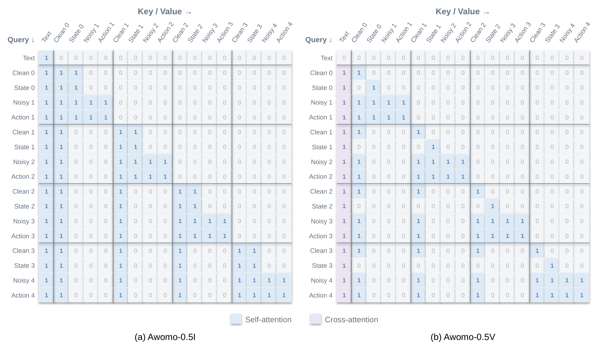
Awomo-0.5I Attention Structure
In Awomo-0.5I, the condition tokens (text, state, and clean reference image) attend only to condition tokens, and the noisy image and action tokens attend to all valid tokens. When a sample contains several chunks, the noisy image and action tokens of a chunk attend to the text, the state of that chunk, the clean images up to the chunk start, and the noisy tokens of the same chunk; noisy tokens and states of different chunks do not attend to each other.
Awomo-0.5V Block-Causal Attention
In Awomo-0.5V, self-attention is block-causal over chunks: clean video tokens attend to clean video up to the current block, each state token attends only to itself, and the noisy video and action tokens of a chunk attend to the clean history together with the noisy video, actions, and state of the same chunk. Text enters every non-text token through cross-attention.
These masks let both variants learn from multi-chunk sequences under teacher forcing while retaining the dependency structure required at inference time.
Flow Matching
Pretraining uses paired flow-matching objectives for visual generation and action generation. Let x0 denote the clean visual latent of the prediction target, a future image for Awomo-0.5I and future video content for Awomo-0.5V, and let a0 denote the aligned H × 80 action chunk of horizon H in the unified action space. The conditioning context c contains the instruction, current visual observations, and robot state. For a flow time t ∈ [0, 1] and Gaussian noise εx, εa ∼ 𝒩(0, I), both variables follow the linear interpolation path:
The target velocities are εx − x0 and εa − a0. The shared transformer predicts both velocities, v̂x and v̂a, from the joint noisy input, flow time, and conditioning context.
Joint Visual–Action Training Objective
The training objective is a weighted combination of visual and action flow-matching losses. The visual loss measures the difference between predicted and target velocities. The action loss uses a validity mask m to select dimensions supported by the embodiment and is normalized by the action length H and the number of valid dimensions:
For robot trajectories and retargeted UMI recordings, δ = 1 and both objectives are active. For egocentric sources without reliable robot commands, δ = 0 removes the action loss while retaining the visual objective. Within action-labeled samples, m excludes unsupported embodiment dimensions, allowing a shared model to learn from platforms with different control spaces without fabricating labels.
Data Pipeline
The pretraining corpus determines the effective upper bound on how far the model can be optimized across heterogeneous embodiments and task families. Accordingly, a large-scale and heterogeneous pretraining mixture is constructed to endow the model with broad embodied perception, spatial reasoning, and action-generation capabilities. Our data pipeline covers collection and generation, a unified action representation, and quality filtering.
36,800 Hours of Pretraining Data
The pretraining corpus contains 36.8K hours across four sources: real-robot trajectories, simulated robot trajectories, UMI human demonstrations, and egocentric human video. Real and simulated robot data combine public and in-house sources. UMI demonstrations come from our collection system, while egocentric video combines public datasets and in-house data. Training sampling ratios are 30%, 30%, 20%, and 20%, respectively.
Real-robot trajectories
Real-world robot trajectories provide the most faithful visual observations of robots interacting with the physical world. We combine public and in-house real-robot trajectories totaling 11,000 hours, covering single-arm and bimanual manipulation with different camera configurations. Public datasets include DROID, AgiBot World, RoboCOIN, and RoboMIND. The resulting mixture delivers complementary supervision over robot morphologies, camera viewpoints, object categories, backgrounds, language instructions, and action distributions, which mitigates overfitting to any single embodiment or environment.
Simulated Robot Trajectories: From Worlds to Demonstrations
Simulation generates object arrangements and task layouts that are costly to build physically and covers long-tail situations rarely encountered during teleoperation. We use approximately 2.1K hours of public simulated data from InternData-A1 and NVIDIA Kitchen Demos, plus 8.5K hours comprising 3.6 million demonstrations generated by SimDataEngine. Public sources cover rigid, articulated, deformable, and fluid manipulation, long-horizon tasks, and multi-arm collaboration. In-house generation targets the embodiments and task families of interest.
SimDataEngine is an agentic, simulation-ready pipeline for world construction and demonstration synthesis. It supplies interactive, physically valid, and reproducible synthetic supervision for embodied-policy training. Generation follows a three-tier chain spanning asset, scene, and demonstration.
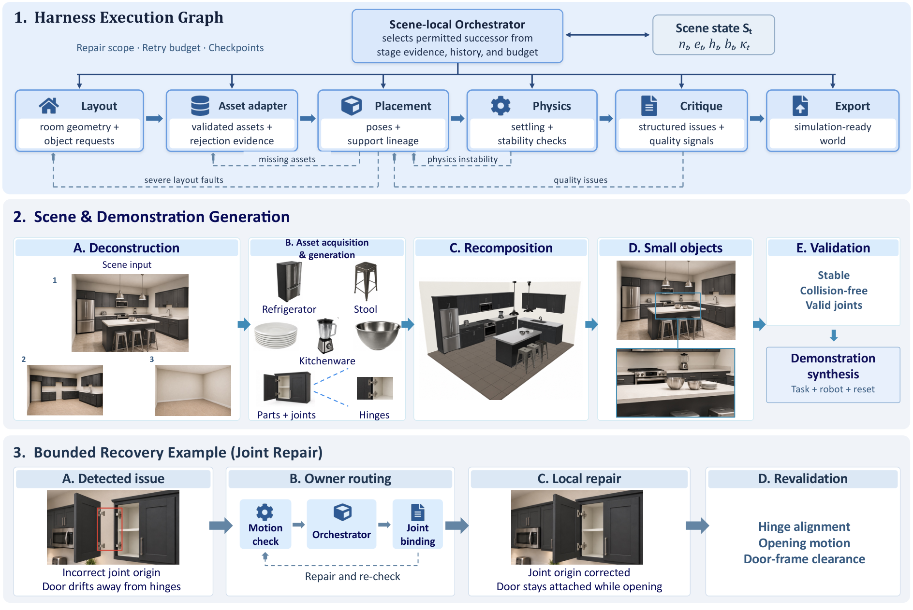
First, a structure-aware asset service (ISArt) generates rigid and articulated objects whose parts and joints remain geometrically consistent. Scene generation proceeds through two complementary pathways: Unravel reconstructs editable scenes from a single image, whereas SimForge synthesizes environments ranging from single-room to multi-room configurations from textual descriptions; both preserve object and articulation identities.
A graph-native execution harness handles construction, validation, and bounded repair, routing failures to the originating module while retaining the unaffected portion of the scene state. On the validated worlds, PolicyForge binds the scene, a task contract (goal, interaction, and success predicates), and a robot-embodiment record, then records synchronized multi-camera RGB imagery, proprioceptive states, and end-effector actions within NVIDIA Isaac Sim. Only episodes satisfying the task-success predicate are retained and exported in LeRobot format.
The pipeline supports multiple embodiments such as Franka, the Piper dual-arm platform, and AgiBot G1/G2. Scale is expanded through digital-cousin variants and sampling across the scene-task difficulty space.
UMI Demonstrations: Collection and Retargeting
Approximately 5.0K hours of UMI demonstrations are collected with the DAS system. The setup consists of a DAS-Ego head-mounted six-camera rig and two handheld DAS Grippers with fisheye cameras, deployed in real homes, commercial spaces, and industrial environments. The head-mounted rig observes both hands, while gripper cameras capture close-range manipulation. Each camera records at no less than 1600 × 1300 resolution and 30 Hz, with global synchronization error below 1 ms.
Each 0.5–5 minute clip is collected through crowdsourcing under a strict prohibition on staged actions. Every episode synchronously contains six ego RGB streams, left and right finger RGB, high-precision 6D pose reconstruction for the ego and both fingers, IMU, gripper open-close distance, camera intrinsic and extrinsic calibration, and audio recordings, together with per-frame and per-segment validity flags and quality-inspection labels. Annotation follows a three-level structure (video level, task level, and subtask level), providing coarse semantic descriptions and fine-grained task/subtask segments.
UMI recordings carry no robot commands, so the end-effector state and the action stream are solved from multi-camera video, 6D pose reconstructions, and raw gripper encoder readings, and are expressed in the same absolute end-effector parameterization as robot data. The two grippers populate the two mirrored arm blocks of the unified action space, and slots the rig cannot supply are excluded by the validity mask.
Egocentric Video: Scalable Manipulation Experience
Compared with teleoperated robot trajectories, egocentric human video offers richer and more scalable real-world manipulation experience across scenes, objects, and task semantics. We combine approximately 6.7K hours of public data and 3.5K hours of in-house data, totaling 10.2K hours. Public sources include Ego4D, EgoDex, EgoSuite-Open100K, EgoVerse, EPIC-KITCHENS, and Xperience. These videos lack precise, directly executable robot-state and action annotations, so the corresponding channels are fully masked and training uses only the visual generation objective.
The in-house egocentric corpus is mined from a large pool of short first-person clips, most of which do not show a manipulating operator: many lack visible hands, show a third-person view of another person, or contain only one hand. Labeling every clip with a vision-language model is too costly at this scale, so the filter is distilled from a teacher into a lightweight student.
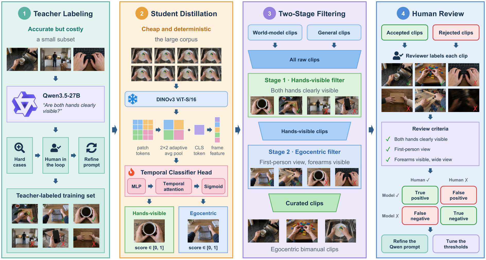
- Teacher labeling. Qwen3.5-27B labels a small subset of roughly 6,000 clips by judging whether both hands of the same operator are clearly visible; hard cases are reviewed by humans and used to refine the teacher prompt, and the resulting labels form the student’s training set.
- Student distillation. Each clip is represented by 8 sampled frames, encoded by a frozen DINOv3 ViT-S/16 backbone into a CLS token and 2 × 2 adaptively pooled patch features per frame; a temporal classifier head (MLP, temporal attention, and sigmoid) aggregates the frame features into a clip-level score in [0, 1]. Two heads are trained, one for hand visibility and one for the egocentric view.
- Two-stage filtering. The hands-visible head first screens all raw clips, and the egocentric head then keeps only first-person clips in which both forearms are visible within a wide field of view; both stages use a score threshold of 0.7.
- Human review. Reviewers inspect sampled accepted and rejected clips against the same criteria, and the resulting confusion counts are used to refine the teacher prompt and tune the thresholds.
Unified 80-Dimensional Action Space
Datasets use different control conventions, including absolute or relative end-effector poses and absolute or relative joint control. To support training across embodiments, we define an 80-dimensional unified action space with fixed semantic slots: 29 dimensions for each arm, 6 each for the base, torso, and head, and 4 reserved dimensions. Each dataset is normalized using the 1st and 99th percentiles per action dimension, then mapped into the corresponding slots by index. Validity masks identify available dimensions; unmapped dimensions do not contribute to action loss.
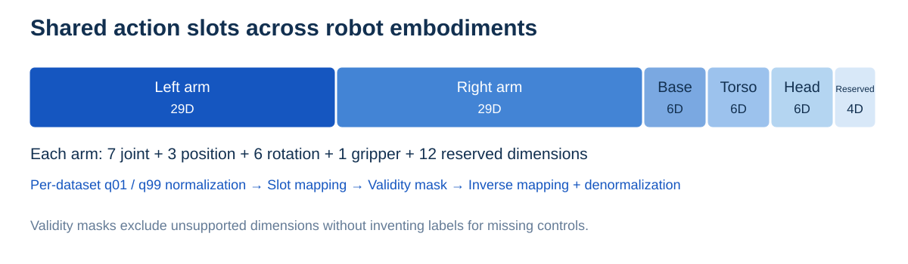
Data Cleaning
Data cleaning follows three stages: visual screening, signal validation, and language review. The pipeline draws on Qwen-RobotManip and incorporates checks for failure modes observed in our collection. Our data cleaning pipeline reduces approximately 60K hours of raw data to 36.8K hours of validated training data. The process is illustrated below on real-robot data.
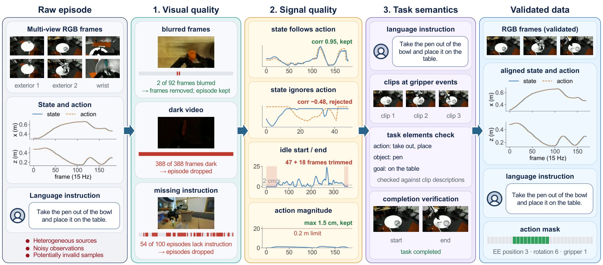
Pretraining Analysis and Ablations
We study pretraining through training losses, per-skill validation errors, downstream adaptation, and human-data ablations. We also examine action representations and the relationship between open-loop error and closed-loop success.
Pretraining Losses and Validation Errors
The plots below show pretraining losses for both models and Awomo-0.5V's end-effector mean absolute error (EEF MAE) for individual atomic skills. Each skill's validation set is disjoint from training in scenes, objects, and instructions. Error is computed only over valid end-effector position, 6D rotation, and gripper dimensions.
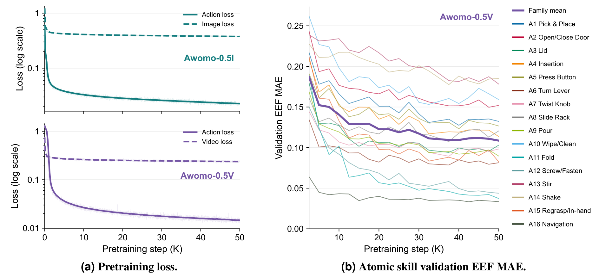
Action losses for both models fall rapidly in the first 10,000 steps and then stabilize. Image and video losses decrease more slowly and continue improving through 50,000 steps. Per-skill validation errors generally decline during pretraining, but skills converge to different levels. Per-skill analysis therefore exposes weaker categories hidden by aggregate means and provides a more detailed view of pretraining.
Effect of Embodied Pretraining
On a 10% evaluation subset of LIBERO-Plus, we compare fine-tuning curves initialized from embodied-pretraining checkpoints and visual foundation model weights. The left plot compares Awomo-0.5I with FLUX.2-klein-base-4B initialization; the right compares Awomo-0.5V with Wan2.2 initialization. Both show up to 12,000 optimization steps.
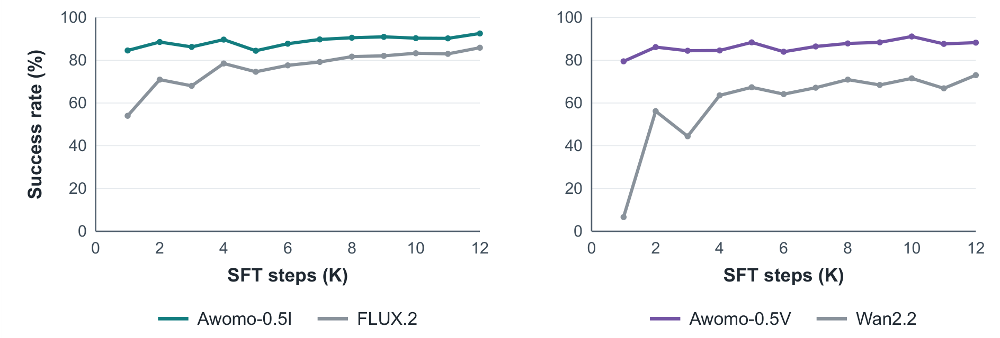
For Awomo-0.5I, the two runs share code, downstream data, optimization recipe, and evaluation subset, and differ only in initialization: our pretrained checkpoint or the original FLUX.2-klein-base-4B weights. After 1,000 optimizer steps, the pretrained run reaches 84.6% success, compared with 54.0% for the FLUX.2-initialized run. At 12,000 steps, the last evaluated step of the FLUX.2 run, the respective success rates are 92.5% and 85.9%. Because initialization is the only changed variable, this gap measures the effect of pretraining on Awomo-0.5I adaptation within the evaluated budget.
For Awomo-0.5V, the run initialized from our pretrained checkpoint reaches 86.2% success after 2,000 optimizer steps, compared with 56.2% for the Wan2.2-initialized run. At 12,000 steps, the respective success rates are 88.3% and 73.0%. The pretrained run therefore adapts faster and achieves higher success within these observed trajectories. The Awomo-0.5V runs differ in training configuration; their gap is descriptive and does not isolate the causal effect of pretraining.
Human Data Ablations
We run two experiments on RoboTwin 2.0 using an early Awomo-0.5V model. The first compares direct fine-tuning on robot demonstrations with UMI pretraining followed by fine-tuning. Both use the same initialization and joint visual-action objective, then fine-tune for 5 epochs on the same 2,500 clean-scene demonstrations. Adding UMI pretraining increases success from 5.6% to 15.0%, a gain of 9.4 percentage points.
The second experiment fixes the data budget at 1,000 hours and compares 1,000 hours of UMI with 500 hours of UMI plus 500 hours of egocentric video. Initialization, optimizer, learning-rate schedule, and downstream fine-tuning settings are held fixed. The mixed dataset achieves 25.2% mean success, compared with 20.0% for UMI alone, improving in all three repeated evaluations.
In this setting, replacing half of the action-supervised UMI corpus with visual-only egocentric experience improves downstream performance. The comparison supports combining the two forms of human experience, while leaving their individual contributions and the best mixture ratio to further study.
Action-Space Ablations
Action-space ablations use SFT checkpoints at 20K steps and the equally weighted mean of LIBERO-Plus and RoboCasa atomic-task success. Each comparison changes one representation choice. With q01/q99 normalization fixed, 6D rotations improve over 3D axis-angle representations by 0.5 percentage points. With 6D rotations fixed, q01/q99 normalization improves over raw actions by 2.2 points, including a 3.0-point gain on RoboCasa atomic tasks.
On unseen RoboCasa365 compositions, open-loop MAE and loss are largely stable after 2.5K steps, while closed-loop success rises from 34.4% at 5K steps to 42.5% at 50K. Changes in open-loop error on unseen tasks therefore do not directly reflect changes in closed-loop success. Agreement between predicted and executed images mainly captures early adaptation and is less useful for distinguishing later checkpoints.
Conclusion & Outlook
Awomo-0.5 turns pretrained image and video generators into robot policies through two direct action interfaces. Awomo-0.5I shares image-patch projections with actions, while Awomo-0.5V embeds actions in a joint video-action transformer. Combined with a heterogeneous corpus of 36,800 hours and a unified masked action space, both variants adapt to simulation and real-world manipulation tasks. The reported results favor the image-based route for LIBERO-Plus adaptation and real-world skill composition. The present study supports visual generation as a practical backbone for scalable robot learning.
Get Awomo-0.5
Access the technical report, code, and model weights below. The code repository and model pages provide the latest availability of benchmark adaptation code and checkpoints.
Code is released under Apache-2.0. Model weights follow the license listed for each checkpoint; the repository currently specifies CC BY-NC 4.0 for weights. Underlying foundation models retain their respective licenses. Project license details ↗
AWOMO develops general-purpose physical intelligence for the real world. The core team originated from Westlake University's Autonomous Intelligence Laboratory (AutoLab). Our work spans world models, embodied learning, and real-world task evaluation, with the aim of developing foundational capabilities that transfer across tasks, scenes, and embodiments.